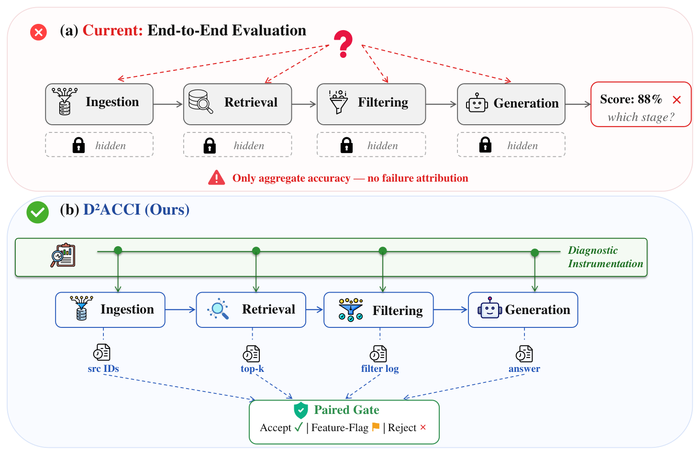

Personal Research EditionLLM Systems · Agents ·
TheoryThursday, 20 August 2026
Daily AI Research Gazette
LLM Systems, Efficient Sequence Models, Agents & Theory
今日焦点 · CoT 与 Agent 实现 CoT & Agentic AI
今日视角 反例、失效模式与适用边界 Failures & Counterexamples
7 精选 / 12 候选 1 知名 / 1 经典
模型按质量自主精选 7 篇，并执行动态篇幅控制。
Today's Search Query · 今日检索式(cat:cs.CL OR cat:cs.AI OR cat:cs.LG OR cat:cs.MA OR cat:cs.SE) AND (ti:"chain of thought" OR abs:"chain of thought" OR ti:"reasoning model" OR abs:"reasoning model" OR ti:"test-time reasoning" OR abs:"test-time reasoning" OR ti:"agentic workflow" OR abs:"agentic workflow" OR ti:"AI agent" OR abs:"AI agent" OR ti:"tool use" OR abs:"tool use" OR ti:"tool calling" OR abs:"tool calling" OR ti:"multi-agent" OR abs:"multi-agent" OR ti:"planning" OR abs:"planning" OR ti:"agent memory" OR abs:"agent memory" OR ti:"computer use agent" OR abs:"computer use agent" OR ti:"reasoning trace" OR abs:"reasoning trace") AND submittedDate:[202608180000 TO 202608210000]
Lead Story · 今日头条

Figure 1: (a) Current end-to-end evaluation reports only aggregate accuracy; internal pipeline states are hidden and failures cannot be attributed to a specific stage. (b) D 2 ACCI emits per-stage traces, enabling paired gates to localize failures and drive targeted repairs.